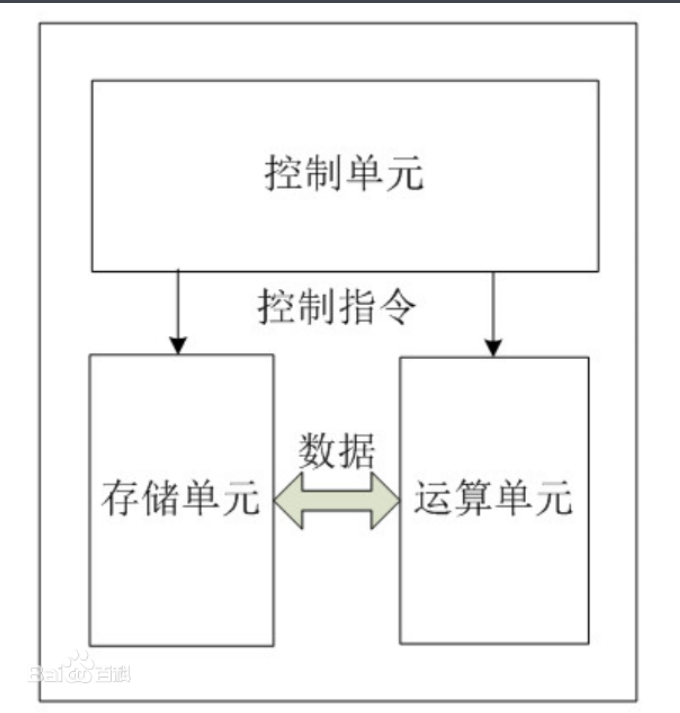
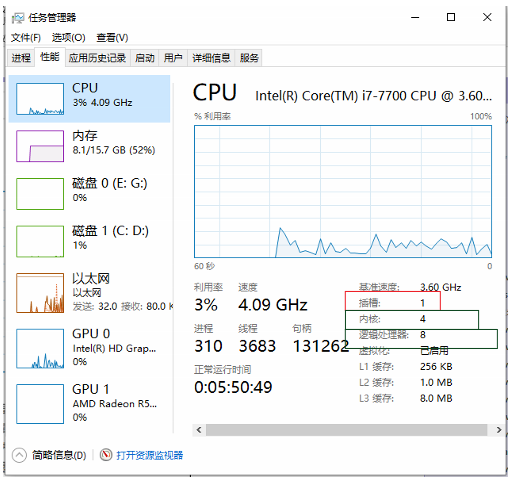

1. CPU概念
中央处理器（英文Central Processing Unit，CPU）是一台计算机的运算核心和控制核心。
2. CPU 结构

控制单元
2.1. 运算单元
2.1.1. 插槽
- [ ]
socket: 插槽、插口 - [x]
sockets/number of sockets: 主板上CPU插口的数量，指的是整个主板上物理CPU的个数。
2.1.2. 核
- [ ]
Core: 核 ，就是平时说的核，双核、四核等。 - [x]
Cores：核数，又称为运算核心数，是指每个CPU上的核数。
Cores=sockets * Cores per socket
$$总核数 = 物理CPU个数 \times 每颗物理CPU的核数$$
2.1.3. 超线程技术
- [ ]
超线程技术（HT, Hyper-Threading）: 也成为CPU虚拟化技术，是在一个实体CPU中提供多个逻辑线程的技术。 - [x]
Thread(s) per core: 单核线程数，指的是每个CPU核的线程数。
一般来说，没有超线程技术的CPU，单核线程数=1，对于Intel 的新开发CPU ，单核线程数=2。1
Thread(s) per core=2
示例：
4核8线程：即物理核心是4个，但是从计算机的角度来看，被虚拟为了8个核心。
2.1.4. 逻辑CPU数量
- [x]
CPU(s): 逻辑CPU数量
CPU(s)=Socket(s)* Core(s) per socket * Thread(s) per core
$$总逻辑CPU数 = 物理CPU个数 \times 每颗物理CPU的核数 \times 超线程数$$
2.3. 存储单元
2.3.1. 高速缓存Cache
Cache，即高速缓存，是介于CPU和内存之间的高速小容量存储器。在金字塔式存储体系中它位于自顶向下的第二层，仅次于CPU寄存器。其容量远小于内存，但速度却可以接近CPU的频率。
当CPU发出内存访问请求时，会先查看 Cache 内是否有请求数据:
1. 如果存在（命中），则直接返回该数据；
2. 如果不存在（失效），再去访问内存 —— 先把内存中的相应数据载入缓存，再将其返回处理器。
提供高速缓存的目的是让数据访问的速度适应CPU的处理速度，通过减少访问内存的次数来提高数据存取的速度。
Cache 技术所依赖的原理是程序执行与数据访问的局部性原理，这种局部性表现在两个方面：
1. 时间局部性：如果程序中的某条指令一旦执行，不久以后该指令可能再次执行，如果某数据被访问过，不久以后该数据可能再次被访问。
2. 空间局部性：一旦程序访问了某个存储单元，在不久之后，其附近的存储单元也将被访问，即程序在一段时间内所访问的地址，可能集中在一定的范围之内，这是因为指令或数据通常是顺序存放的。
时间局部性是通过将近来使用的指令和数据保存到Cache中实现。空间局部性通常是使用较大的高速缓存，并将 预取机制 集成到高速缓存控制逻辑中来实现。
2.2. 查看CPU信息
Linux
lscpu >>> Architecture: x86_64 CPU op-mode(s): 32-bit, 64-bit Byte Order: Little Endian CPU(s): 8 On-line CPU(s) list: 0-7 Thread(s) per core: 2 Core(s) per socket: 4 Socket(s): 1 Vendor ID: GenuineIntel CPU family: 6 Model: 158 Model name: Intel(R) Core(TM) i7-7700 CPU @ 3.60GHz Stepping: 9 CPU MHz: 3600.000 CPU max MHz: 3600.0000 BogoMIPS: 7200.00 Virtualization: VT-x Hypervisor vendor: Windows Subsystem for Linux Virtualization type: container
Windows下：
在cmd命令中输入wmic，然后在出现的新窗口中输入cpu get *
wmic >>> wmic:root\cli> cpu get Name >>> Intel(R) Core(TM) i7-7700 CPU @ 3.60GHz # 表示物理CPU的名称，共有1个。 cpu get NumberOfCores >>> NumberOfCores 4 # 表示CPU核心数 cpu get NumberOfLogicalProcessors >>> NumberOfLogicalProcessors 8 # 表示CPU逻辑核数。当有超线程时，比如2，逻辑核数=核心数*2

3. 指令集问题
背景
- [ ]
指令集：存储在CPU内部，对CPU运算进行指导和优化的硬程序。
拥有这些指令集，CPU就可以更高效地运行。
Intel主要有 [x86，EM64T，MMX，SSE，SSE2，SSE3，SSSE3 (Super SSE3)，SSE4A，SSE4.1，SSE4.2，AVX，AVX2，AVX-512，VMX] （时间排序） 等指令集。
AMD主要是x86，x86-64，3D-Now!指令集。
| 厂家 | 指令集 | 说明 | |
|---|---|---|---|
| Intel | SSE2 | Streaming SIMD Extensions | |
| Intel | AVX | 高级矢量扩展,Intel Advanced Vector Extensions (Intel AVX) | AVX引入了融合乘法累加（FMA）运算，加速了线性代数计算，即点积，矩阵乘法，卷积 |
4. 虚拟化问题
虚拟化 就是由位于下层的软件模块，根据上层的软件模块的期待，抽象（虚拟）出一个虚拟的软件或硬件模块，使上一层软件直接运行在这个与自己期待完全一致的虚拟环境上。
CPU 虚拟化 主要指 intel 的 VT-x 和 AMD 的 AMD-V 为主的硬件辅助的 CPU 虚拟化技术
其中，Intel VT 包括 VT-x （支持 CPU 虚拟化）、EPT（支持内存虚拟化）和 VT-d（支持 I/O 虚拟化）
VMM 全称是 Virtual Machine Monitor，虚拟机监控系统，也叫 Hypervisor，是虚拟化层的具体实现。主要是以软件的方式，实现一套和物理主机环境完全一样的虚拟环境，物理主机有的所有资源，包括 CPU、内存、网络 IO、设备 IO等等
KVM 是一种硬件辅助的虚拟化技术，支持 Intel VT-x 和 AMD-v 技术，怎么知道 CPU 是否支持 KVM 虚拟化呢？可以通过如下命令查看：
CPU 是否支持虚拟化关系到是否能使用docker 等虚拟化工具
5. CPU硬件识别
使用 英特尔® 处理器识别实用程序 产看 intel 系列 CPU 数据
https://www.intel.cn/content/www/cn/zh/support/products/5982/processors/processor-utilities-and-programs/intel-processor-identification-utility.html